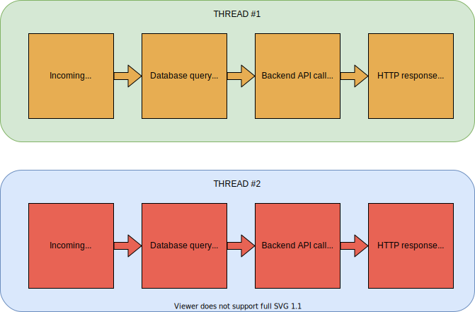

Hold my context!
Miroslav Bajtoš
About me
🇨🇿
Senior Software Engineer
@ Protocol Labs
History
StrongLoop & IBM
Node Inspector
LoopBack
Node.js core
What is context propagation?
Example API server

const app = require('express')();
const {queryProducts} = require('./db');
const {getRatings} = require('./ratings');
app.get('/products', listProducts);
function listProducts(req, res, next) {
const filter = /* build filter from req.query */;
queryProducts(filter, (err, products) => {
if (err) return next(err);
const prodIds = products.map(p => p.id);
getRatings(prodIds, (err, ratings) => {
if (err) return next(err);
res.json(/* build the response */);
});
});
}
Application Context
Correlation ID
User credentials
User permissions
Implicit Context
queryProducts called from listProducts
getRatings called from queryProducts callback
/products handler triggers SQL query
SELECT * FROM products
/products handler triggers HTTP call
toGET /ratings
Thread-per-request model

Event-loop model

Early solutions
Domains (2012-2015)
const domain = require('domain');
const server = require('http').createServer((req, res) => {
const d = domain.create();
d.on('error', (err) => { /* handle uncaught errors */ });
d.add(req);
d.add(res);
d.run(() => {
handleRequest(req, res);
});
});
continuation-local-storage (2013-2017)
// request-context.js
const {createNamespace} =
require('continuation-local-storage');
module.exports = createNamespace('my local storage');
// server.js
const requestCtx = require('./request-context');
const server = require('http').createServer((req, res) => {
requestCtx.run(() => {
requestCtx.bindEmitter(req);
requestCtx.bindEmitter(res);
handleRequest(req, res);
});
});
// inside your middleware and routes
const ctx = require('./request-context');
ctx.set('request-id', req.headers['X-Correlation-ID']);
const reqId = ctx.get('request-id');
Issues
Context is lost
Request context is undefined
Incorrect context
Request 2 gets context of request 1
Connection pools

Task queues
user-land Promise implementations
No magic
Always reliable
Major code changes
No implicit context propagation
Built-in API
Supported by all core modules
(including native Promises)
API to restore context
Little to no performance overhead
Design based on domains
Abandoned before release
Based on async listener internals
Undocumented low-level API
continuation-local-storage + async hooks
🎯
Node.js core feature
Easy-to-use API
Stable since version 16.4.0 (Feb 2021)
server started
connection accepted
See
node#41285 and
node#41978
Callbacks breaks async context
(Promises works)
Example: q
Last release: Oct 2017
Weekly downloads: 14.7m
Detects async context propagation problems AsyncLocalStorage is finally here
(experimental in Node.js 14.x, stable from 16.x)
Native Promises & async/await Choose modern & actively-maintained dependencies
Miroslav Bajtoš
slides: bajtos.net/C
Explicit context passing
function listProducts(req, res, next) {
const context = /* build from req */;
const filter = /* build filter from req.query */;
queryProducts(context, filter, (err, products) => {
if (err) return next(err);
const prodIds = products.map(p => p.id);
getRatings(context, prodIds, (err, ratings) => {
if (err) return next(err);
res.json(/* build the response */);
});
});
}
Pros
Cons
The holy grail
The quest
async listener (2013-2014)
async wrap (2015-2018)
async hooks (2017-now)
cls-hooked (2016-2019)
async local storage (2020-now)
Async Hooks
const async_hooks = require('async_hooks');
async_hooks.createHook({
init(asyncId, type, triggerAsyncId) {
fs.writeSync(
process.stdout.fd,
`${type} ${asyncId} triggered by ${triggerAsyncId}\n`,
);
}
}).enable();
require('net').createServer((conn) => {}).listen(8080);
TCPSERVERWRAP 5 triggered by 1
TCPWRAP 7 triggered by 5
Restore context manually
const { AsyncResource } = require('async_hooks');
module.exports = function queue(taskFn, callback) {
callback = AsyncResource.bind(callback);
myTaskQueueImpl.schedule(taskFn, callback);
}
Promises preserve context
module.exports = function queue(taskFn) {
return new Promise((resolve, reject) => {
myTaskQueueImpl.schedule(taskFn, (err, result) => {
if (err) return reject(err);
resolve(result);
});
});
}
Async Local Storage
// request-context.js
const { AsyncLocalStorage } = require('async_hooks');
module.exports = new AsyncLocalStorage();
// server.js
const localStorage = require('./request-context');
const server = require('http').createServer((req, res) => {
localStorage.run(
// initial context,
new Map(),
// function to run
handleRequest,
// `this` + arguments
undefined, req, res);
});
});
// inside your middleware and routes
const localStorage = require('./request-context');
const ctx = localStorage.getStore();
ctx.set('request-id', req.headers['X-Correlation-ID']);
const reqId = ctx.get('request-id');
fastify
// server.js
const Fastify = require('fastify');
const {
fastifyRequestContextPlugin
} = require('@fastify/request-context');
const app = Fastify();
app.register(fastifyRequestContextPlugin);
// inside your middleware and routes
const {requestContext} = require('@fastify/request-context');
requestContext
.set('request-id', req.headers['X-Correlation-ID']);
const reqId = requestContext.get('request-id');
Known issues
Tricky edge cases
const storage = new AsyncLocalStorage();
http.createServer((req, res) => {
storage.run({ /* context */ }, function () {
req.resume();
req.on('end', () => {
// context is lost
});
});
});
User-land modules still catching up
pg-pool
abandonware
async-break-finder
Takeaways
restore async context
Thank you!
twitter.com/bajtos